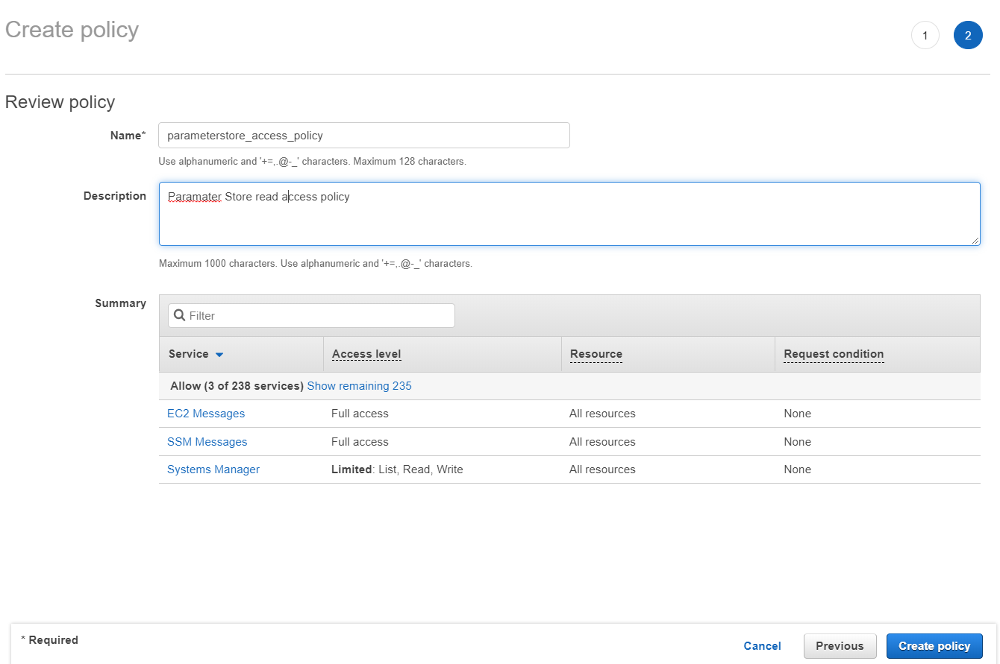

Indicator
The Indicator Block shows a point at a particular location on the page and allows you to indicate something important in a specific area. It is useful for attracting the user's attention to a particular point or spot on the page.
Note
Some images in this document may be missing and need to be migrated from the original GitBook documentation.
Indicator Properties
Appearance
Common Properties
The visibility property is common to most Blocks;
See the Common Properties article for more details on common appearance properties.
Text
This is the text that is displayed inside the Indicator.

Mode
The mode indicates the shape of the Indicator.

Size
This specifies the size of the Indicator.

Color
This species the color of the Indicator.

X-Axis and Y-Axis
This specifies where the Indicator is positioned along an X-axis and Y-axis.

Label
The visibility of the label can be set to never, on hover, or always.
The position of the label can be set to either top, bottom, left, or right.
The color of the text and the background can be changed.
The padding determines how much spacing shows between the text and the edge of the box.

The border radius option specifies the outer edge and corners of the block around the label.

Action
Common Properties
Properties that are common to most Blocks include: navigate to and show confirmation dialog;
See the Common Properties article for more details on common action properties.
Last modified: May 13, 2025